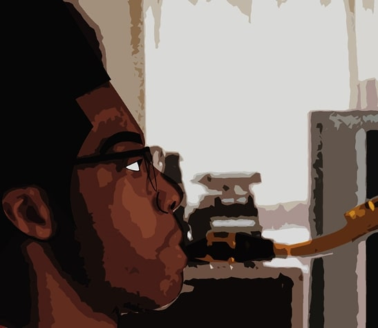

Way

Medium: Audacity and Sublime
I decided to use a Google image of an elongated wooden bridge and produce a distorted visual.
The Velvet Room

Medium: Audacity and Sublime
This is a room that is commonly featured from the video game series "Persona". I felt that adding glitch elements would truly compliment the chaos and elegance that radiates within this particular part of the game.
Don't Say It

Medium: Audacity and Sublime
For my digital composite, I decided to use an iconic scene from one of the most influential films from the 1990s called “Pulp Fiction” and a very unique word font and style used heavily from an ongoing video game franchise “Persona” as of 2019. The inspiration for this piece mostly came from the movie because I wanted to capture an immersive experience within this scene. I believe that I was able to convey a distinctive blend between this movie and the Persona game. Audacity was a very intriguing program that I used to generate unique effects/tools like distortion, echo and phaser in order to produce this design of glitch art. Ultimately, I highly enjoyed the experience of this assignment.
About Me
Graphic Designer & Illustrator of 4 years.